From critical scaling to baryon number fluctuations: probing the QCD critical point
Shi Yin
Alumni Seminar, 08.10.2026
2. Recchi and SY, arXiv:2609.17328
3. SY, in preparation
With the help of


Outline
- QCD phase diagram and phase transitions
- Heavy-ion collisions
- Baryon number fluctuations
- QCD-assisted low energy effective theory
- Fluctuations near the liquid–gas transition
- Universality class of the CEP
- Summary and Outlook
Phases of strongly interacting matter
- Water: the first-order liquid–gas line ends at a critical point; beyond it liquid and gas are connected by a crossover
- QCD: hadrons \(\leftrightarrow\) quark–gluon plasma, crossover at small \(\mu_B\), conjectured first-order line ending at the CEP
- Both critical points (and the nuclear liquid–gas one) belong to the 3D Ising universality class
Phase transitions in a nutshell
- Order parameters of QCD: chiral condensate \(\langle\bar q q\rangle\) (chiral symmetry), Polyakov loop \(L\) (confinement)
- Critical point: end point of a first-order line, second-order transition with correlation length \(\xi\to\infty\)
- Critical behavior is universal: it only depends on symmetry and dimension, not on the microscopic details
What do we know about the QCD phase diagram?
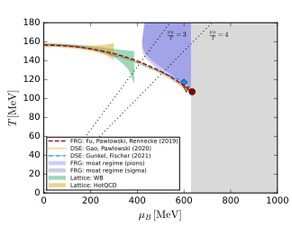
- \(\mu_B=0\): chiral crossover at \(T_{pc}\approx 156\) MeV (lattice QCD)
- \(\mu_B>0\): sign problem, lattice results limited to \(\mu_B/T\lesssim 2\text{–}3\)
- Functional QCD (fRG, DSE) estimates of the CEP converge: \[ 600\ \text{MeV}\lesssim \mu_{B,\rm CEP}\lesssim 650\ \text{MeV} \]
- Where is the CEP? Can experiments see it?
Outline
- QCD phase diagram and phase transitions
- Heavy-ion collisions
- Baryon number fluctuations
- QCD-assisted low energy effective theory
- Fluctuations near the liquid–gas transition
- Universality class of the CEP
- Summary and Outlook
Heavy-ion collisions
Particles entering the detector
Counting particles in the detector
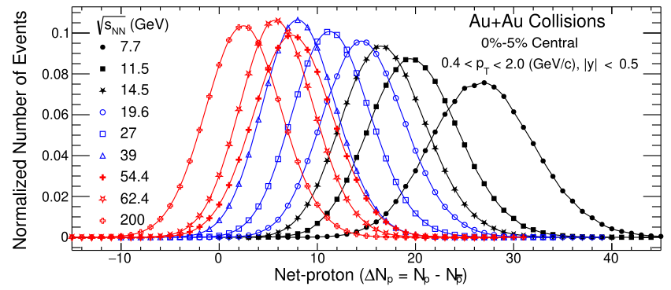
- The probability distribution of net-proton
- The distribution changes with the collision energy
- Collision energy is related to the density
High vs low collision energy
Lower \(\sqrt{s_{NN}}\) ⇒ more baryon stopping ⇒ larger \(n_B\) and \(\mu_B\) at mid-rapidity ⇒ scanning \(\sqrt{s_{NN}}\) scans the phase diagram along \(\mu_B\)
Why grand canonical ensemble?
Collider vs Fixed target
Scanning the phase diagram: experiments
| Experiment | Mode | \(\sqrt{s_{NN}}\) [GeV] |
|---|---|---|
| STAR BES-II (RHIC) | collider | 7.7 – 27 |
| STAR FXT (RHIC) | fixed target | 3.0 – 13.7 |
| HADES (GSI) | fixed target | 2.4 – 2.55 |
| NA61/SHINE (CERN SPS) | fixed target | 5.1 – 17.3 |
| CBM (FAIR, future) | fixed target | 2.9 – 4.9 |
| MPD (NICA, future) | collider | 4 – 11 |
Lower \(\sqrt{s_{NN}}\) ⇒ larger \(\mu_B\) at freeze-out: the beam energy scan scans the phase diagram along the freeze-out curve
TODO：核对表中能量范围
Outline
- QCD phase diagram and phase transitions
- Heavy-ion collisions
- Baryon number fluctuations
- QCD-assisted low energy effective theory
- Fluctuations near the liquid–gas transition
- Universality class of the CEP
- Summary and Outlook
QCD phase diagram
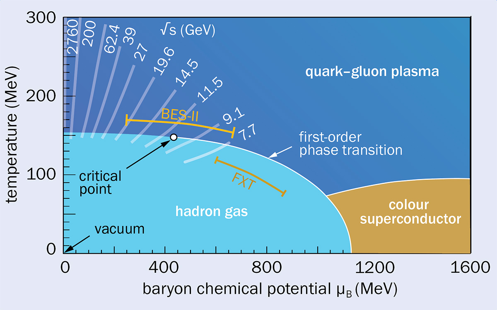
Cumulants of the net-proton distribution
STAR Collaboration, arXiv:2001.02852
Why higher-order cumulants?
- Cumulants = derivatives of the QCD pressure: direct link between theory and measurements
- Ratios cancel the unknown volume \(V\); baseline without correlations (Skellam / HRG): \(R_{42}^B=1\)
- Near the CEP higher orders grow with higher powers of the correlation length: \[ C_2\sim\xi^{2},\qquad C_3\sim\xi^{4.5},\qquad C_4\sim\xi^{7} \]
- Caveats: net-proton vs. net-baryon, finite size and time (\(\xi\lesssim 2\text{–}3\) fm), baryon number conservation
Non-monotonic behavior of 4th order cumulants
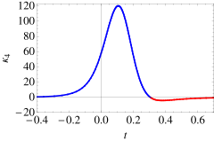
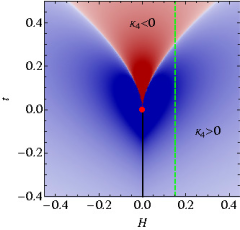
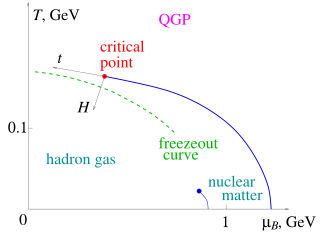
Outline
- QCD phase diagram and phase transitions
- Heavy-ion collisions
- Baryon number fluctuations
- QCD-assisted low energy effective theory
- Fluctuations near the liquid–gas transition
- Universality class of the CEP
- Summary and Outlook
From QCD to low-energy effective theories
- Assume the system is in a state of equilibrium
- Assume the system can be described by the grand canonical ensemble
Low energy effective field theory (LEFT)
- Linear sigma model (only mesons)
- Suitable for describing the scaling behavior and universality class
- NJL model (only quarks)
- Suitable for describing the chiral symmetry breaking and the color superconductivity
- (Polyakov-) Quark-Meson model (mesons+quarks)
- The ideal framework for phenomenology, bridging critical fluctuations and thermal dynamics
Low energy effective field theory (LEFT)
- Polyakov-Quark-Meson (PQM) model within functional renormalization group (fRG)
- Baryon number fluctuations
QCD-assisted LEFT: input from fRG-QCD
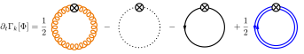
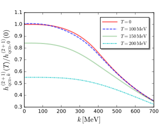
- LEFT = QCD flow below \(\Lambda=700\) MeV: the glue sector decouples (gluon mass gap)
- Thermal Yukawa coupling from 2+1 flavor fRG-QCD: \[ h_k(T)=h_0\,\frac{h_k^{\rm QCD}(T)}{h_0^{\rm QCD}(0)} \]
- Glue background: Polyakov loop potential from Yang–Mills, rescaled to QCD
- Remaining parameters \(\nu_\Lambda,\ \lambda_\Lambda,\ h_0,\ c_\sigma\) fixed by vacuum observables
Benchmark and phase structure
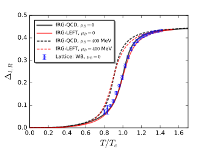
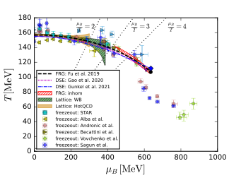
QCD input moves the CEP into the functional QCD range (600–650 MeV); conventional (P)QM models: \(\mu_{B,\rm CEP}>850\) MeV
Predictions of the fluctuations
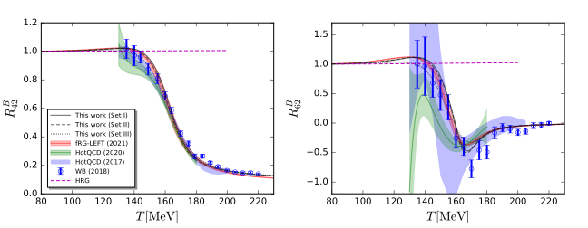
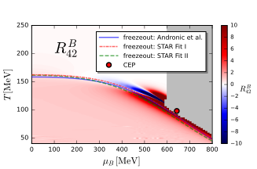
Fluctuations along the freeze-out curve
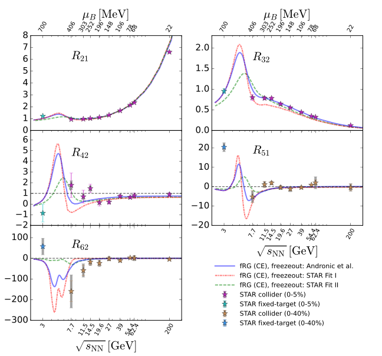
- Global baryon number conservation (canonical corrections) included for \(\sqrt{s_{NN}}\lesssim 11.5\) GeV
- Non-monotonic \(R_{42}^B\) for 7.7–200 GeV, consistent with STAR
- Prominent peak at \(3\lesssim\sqrt{s_{NN}}\lesssim 7.7\) GeV: the fixed-target range
- Hyper-order \(R_{51}^B,\ R_{62}^B\) turn negative at lower \(\sqrt{s_{NN}}\)
What does the peak tell us?
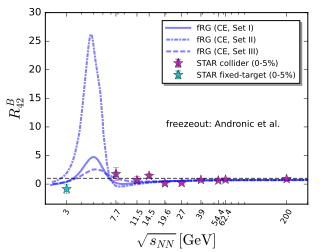
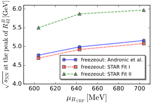
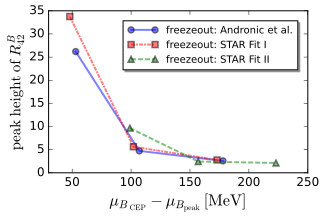
- Peak position (\(\sqrt{s_{NN}}\approx 5\text{–}6\) GeV) is set mainly by the freeze-out curve
- Peak height depends on \(\mu_{B,\rm CEP}-\mu_{B,\rm peak}\), growing strongly below \(\sim\)100 MeV
The height of the peak encodes the location of the CEP
Outline
- QCD phase diagram and phase transitions
- Heavy-ion collisions
- Baryon number fluctuations
- QCD-assisted low energy effective theory
- Fluctuations near the liquid–gas transition
- Universality class of the CEP
- Summary and Outlook
The nuclear liquid–gas transition
- \(T=0\): nuclear matter appears at \(\mu_B\approx m_N-16\) MeV \(\approx 923\) MeV (saturation density \(n_0\approx 0.16\ \text{fm}^{-3}\))
- First-order line between nucleon gas and nuclear liquid, ending at a CEP with \(T_c\approx 15\text{–}20\) MeV
- Same Z2 (3D Ising) universality class as the QCD CEP
- Low-energy collisions (\(\sqrt{s_{NN}}\lesssim 4\) GeV) freeze out close to this region
Parity-doublet model (PDM)
- Nucleon \(N(939)\) and its parity partner \(N^*(1535)\); chirally invariant mass \(m_0\)
- \(\omega\) exchange: repulsion; parameters fitted to nuclear matter at saturation
- \(m_0=600\) MeV from LG critical temperature and neutron star maximum mass
- Mean field, grand canonical; reliable for \(T\lesssim 120\) MeV
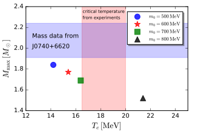
Fluctuations near the liquid–gas transition
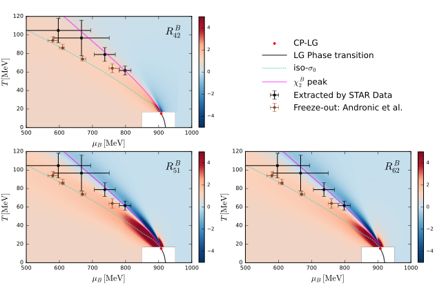
- Dilute gas: \(R_{42}^B=1\) (Skellam)
- Strong sign changes of \(R_{42}^B,\ R_{51}^B,\ R_{62}^B\) toward the LG critical point
- Freeze-out at high \(\mu_B\) is poorly known. Three scenarios:
• constant \(\sigma_0=88\) MeV
• peak of \(\chi_2^B\)
• extracted from \(R_{21},\ R_{31}\) (STAR FXT)
Comparison with low-energy data
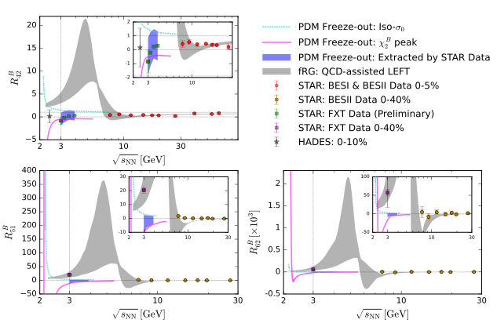
- FXT data below 7.7 GeV: \(R_{42}<1\)
- QCD-assisted LEFT (quarks + mesons, gray): \(R_{42}^B\to1\) at low energy
- PDM with freeze-out extracted from \(R_{21},\ R_{31}\) (blue) agrees with preliminary STAR FXT data for \(\sqrt{s_{NN}}\lesssim 4\) GeV
- Not yet included: non-equilibrium, baryon number conservation, protons vs. neutrons
Nucleon interactions and the LG transition may contribute significantly to fluctuations at low collision energies
Outline
- QCD phase diagram and phase transitions
- Heavy-ion collisions
- Baryon number fluctuations
- QCD-assisted low energy effective theory
- Fluctuations near the liquid–gas transition
- Universality class of the CEP
- Summary and Outlook
O(4) vs. Z2: shape of the effective potential
- \(U(\sigma)=\tfrac{a}{2}\sigma^2+\tfrac{\lambda}{4}\sigma^4-h\sigma\), one real field
- two isolated vacua \(\pm\sigma_0\): no flat direction, all modes massive
- 3D Ising class: QCD critical endpoint
- \(U(\rho)-h\sigma\), \(\rho=\tfrac12(\sigma^2+\vec\pi^{\,2})\)
- valley of vacua \(S^3\): flat directions \(\Rightarrow\) 3 Goldstone pions, \(m_\pi^2=U'(\rho_0)=h/\sigma_0\)
- 3D O(4) class: chiral transition (\(N_f=2,\ m_q=0\))
\(h\neq0\): the pion direction stays curved, \(m_\pi^2=h/\sigma_0>0\) ⇒ only the \(\sigma\) direction can turn flat ⇒ a critical point at \(m_q\neq0\) (e.g. the QCD CEP) is Z2, not O(4)
Why is the QCD CEP an Ising critical point?
- Only one mode turns soft (\(\xi\to\infty\)): one real field \(\phi\) ⇒ \(U(\phi)=\tfrac{r}{2}\phi^2+\tfrac{u}{4}\phi^4-h\phi\) (\(\phi^3\) removed by a shift)
- First-order line \(=\{h=0,\ r<0\}\): two degenerate minima (\(\uparrow/\downarrow\), liquid/gas, hadrons/quark matter)
- Same \(d=3\) and same order parameter ⇒ same exponents \(\beta\simeq0.326,\ \gamma\simeq1.237,\ \nu\simeq0.630,\ \delta\simeq4.79\)
In QCD the Z2 is not a symmetry of the Lagrangian: it emerges at the CEP. \(\phi\) mixes \(\sigma\), \(n_B\) and \(\varepsilon\); \((T,\mu_B)\to(r,h)\) is a non-universal map
Critical scaling near the CEP
- Close to the CEP all singular behavior follows from one universal scaling function \(f_G(z)\)
- Cumulants \(\leftrightarrow\) derivatives of \(f_G\): universal sign pattern of \(\kappa_4\)
- Non-universal: amplitudes and the size of the scaling region
3D Ising
Mapping QCD onto the Ising model
in the QCD phase diagram \((T,\mu_B)\)
- Near the CEP: linear map \((T,\mu_B)\to(r,h)\) \[ \begin{pmatrix} r\\ h\end{pmatrix}=M\begin{pmatrix} T-T_{\rm CEP}\\ \mu_B-\mu_{B,\rm CEP}\end{pmatrix} \]
- \(r\)-axis tangent to the first-order line; the \(h\)-axis direction is not fixed by symmetry
- Angles and scales of \(M\) are non-universal: they have to be computed in QCD
How large is the critical region?
(fRG)
- TODO：从 fRG 提取有效临界指数，与 3D Ising 比较
- TODO：标度区的大小，以及冻结线是否经过标度区
Ripples of the QCD critical point
Summary and Outlook
- QCD phase diagram: crossover at \(\mu_B=0\); functional QCD locates the CEP at \(\mu_B\approx 600\text{–}650\) MeV
- Heavy-ion collisions scan the phase diagram; baryon number cumulants are sensitive to the correlation length
- QCD-assisted LEFT: CEP at \((98,\,643)\) MeV, a peak of \(R_{42}^B\) at \(\sqrt{s_{NN}}\approx 5\text{–}6\) GeV whose height encodes the CEP location
- Liquid–gas transition (PDM): agrees with preliminary STAR FXT \(R_{42}\) for \(\sqrt{s_{NN}}\lesssim 4\) GeV ⇒ nucleon interactions matter at low energies
- The QCD CEP is in the 3D Ising class, but its scaling region is small: experiments see the non-universal “ripples” TODO：补充结论
- Outlook: non-equilibrium dynamics, net-proton vs. net-baryon, BES-II / FXT and future CBM data TODO
Single figure with labels
Equations and figure
Two figures with arrows
Pop-up overlay
Key message in the pop-up
Summary and Outlook
- First point
- Second point
- Outlook / next steps